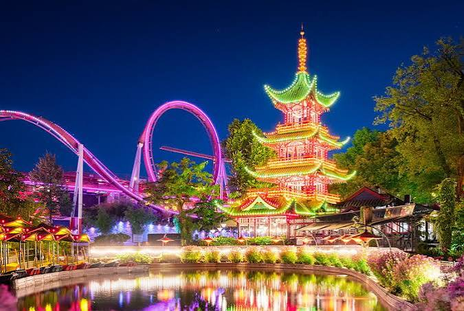
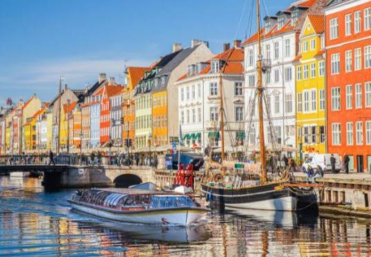
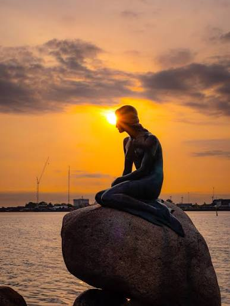
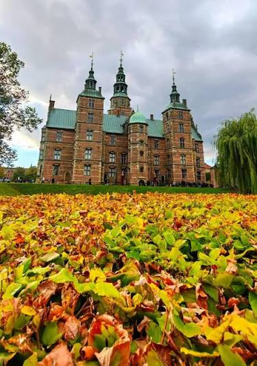
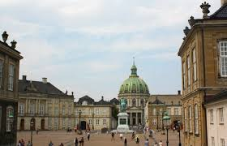
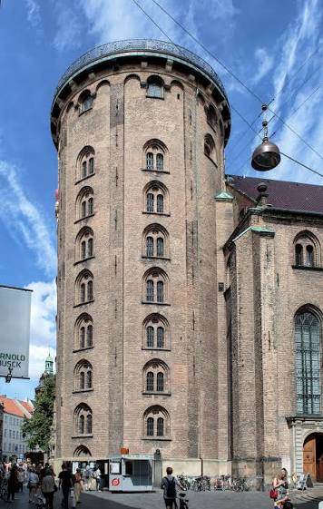
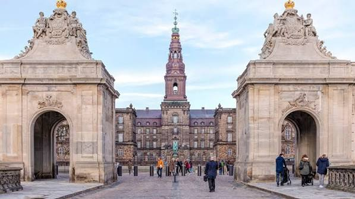
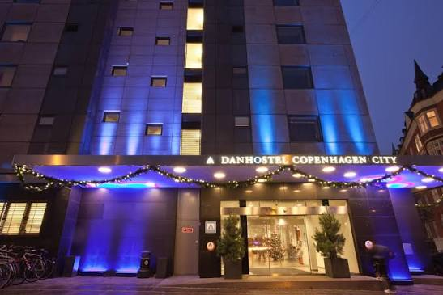

★ World's Happiest City🚲 380 km of Bike Lanes🌈 Colourful Nyhavn
INSIDE: Nyhavn — the painted 17th-century waterfront · Tivoli Gardens — the world's 2nd oldest amusement park · The Little Mermaid at sunset · a royal city on foot · and the 8 km bridge to Sweden
Munasinghe-Fernando Family · Sun 2 — Mon 3 Aug 2026
No. 12 · A Letter from the Road
Welcome to hygge.

Copenhagen was a one-night stop on the way to the sister visit in Gothenburg. We flew in from Amsterdam on a Sunday, checked into the Danhostel in the city centre, and had barely twenty-two hours before the train south. In between we packed in the things you cannot miss: Nyhavn, Tivoli, the Little Mermaid, the royal palaces, and as much smørrebrød as we could manage.
The city is small — 660,000 people, 380 km of bicycle lanes, a cycling rate of 62% against Amsterdam's 38%. Copenhagen has been voted the world's happiest city more often than anywhere else, and you feel why within ten minutes: it is clean, it is calm, the architecture is colourful but never garish, and people smile at you on the bus.
This issue is a short one. We were here for twenty-two hours. We made them count.
— The Munasinghe-Fernandos, 2026
In this issue
Welcome — Hygge02
Nyhavn — The Painted Harbour03
Tivoli Gardens04
The Little Mermaid05
Album — A Royal City on Foot06
Album — Twenty-Two Hours07
Tastes of Denmark08
Reflections + What's Next09
COVER STORY · NYHAVN · DAY 25
A canal of painted houses.
Where the merchants' harbour learned contentment
The name says everything: København, the merchants' harbour — a Viking-age landing where the herring were fat and the sound between the islands funnelled every ship bound for the Baltic. Trade and fortification made it a capital, seat of one of the oldest continuous monarchies on earth, its royal line stretching back more than a thousand years. But Copenhagen's modern genius has been to turn hard northern practicality into something gentler: a city built for bicycles rather than cars, for clean design and long winters softened by candlelight and the untranslatable comfort the Danes call hygge.
Nyhavn itself — "New Harbour" — was dug by Swedish prisoners of war in the 1670s and worked as a sailors' quay for three centuries. Hans Christian Andersen lived in three of its houses at different points in his life. By the 1960s it had grown so rough the cafés shut by eight; restored and pedestrianised in the 1980s, it is now the most photographed view in Denmark.
Our first afternoon began where every Copenhagen story does — at the row of painted 17th-century townhouses along the New Harbour, with the old wooden boats still moored beneath them.
Sun 2 Aug 2026Nyhavn, Inner HarbourCanal walk + dinner

Photo · Munasinghe-Fernando
Nyhavn under a clear Danish sky — the painted 17th-century townhouses, a century-old sailing ship, and the canal tour boats that leave from the quay all day long.
We ate dinner at a canal-side table — smørrebrød open sandwiches, a beer for me, a sparkling elderflower for Lana, sodas for the kids — and watched the sky go from pale blue to peach. Tour boats slid past; cyclists chimed their bells; the wooden boats moored along the water are more than a hundred years old. The kids ran the cobblestones and threw imaginary pebbles into the canal. It was, in a word, hygge.
More bikes than cars, more parks than shopping malls, and the colour-coded waterfront of Nyhavn.
It is touristy, and the restaurants are expensive, and none of that matters once the light turns gold on those façades. Hans Christian Andersen wrote his fairy tales a few doors down; his Little Mermaid still watches the harbour from her rock; Tivoli's lanterns were already glowing a few streets away. Few capitals wear their happiness so lightly, or so deliberately — and we had a whole colourful evening of it before the day was done.
— Issue 12 · DENMARK · 03 —
TIVOLI GARDENS · DAY 25
One hundred and eighty years of magic.
The pleasure garden that taught Disney
Tivoli Gardens opened on 15 August 1843, when a clever showman named Georg Carstensen persuaded King Christian VIII to grant him land just outside the city ramparts — arguing that "when the people are amusing themselves, they do not think about politics." It is the world's second-oldest amusement park still running, younger only than Dyrehavsbakken north of the city (1583). Its wooden roller-coaster from 1914 is one of the oldest anywhere still turning.
Two names haunt the gardens. Hans Christian Andersen was a regular, and the lantern-lit Chinese fantasy of the place fed straight into his tale "The Nightingale." And in 1951 a visiting American named Walt Disney wandered Tivoli, took notes on its lights, music and cleanliness, and carried the feeling home — Disneyland opened four years later.
By evening we were inside the gardens for the thing the children had been promised all day: the lights coming on.
Sun 2 Aug 2026Tivoli · city centreEvening · lights + rides
Photo · Munasinghe-Fernando
Tivoli after dark — the illuminated Chinese Tower above the lake, the old roller-coaster looping behind it, and thousands of coloured lights reflected in the water.
Tivoli at dusk is exactly what a hundred and eighty years of practice make it: the lake mirror-still, the pagoda blazing, the smell of roasted almonds, the small shrieks from the coaster carried across the water. We rode the gentle things, watched the older kids brave the fast ones, and ate æbleskiver dusted with sugar. Avin declared it better than any playground on earth.
When the people are amusing themselves, they do not think about politics. — Georg Carstensen, 1843
We stayed until the lights doubled themselves in the lake and the little ones' legs gave out. It is the sort of place that makes you forgive a city all its prices — and it sent us back to the hostel happy, ready for a single short morning before the train.
— Issue 12 · DENMARK · 04 —
THE LITTLE MERMAID · DAY 25
The smallest famous landmark.
A fairy tale cast in bronze
The statue was commissioned in 1909 by Carl Jacobsen — son of the Carlsberg brewery's founder — after he watched a ballet of Andersen's Den lille Havfrue and could not shake the image. The sculptor Edvard Eriksen unveiled her by the Langelinie promenade in 1913: 1.25 metres of bronze on a granite rock, modelled (so the story goes) on his own wife, Eline. She has watched the harbour ever since.
Watched, and survived. She has been beheaded twice, lost an arm, been blown from her rock, and been painted every colour there is. Each time, Copenhagen quietly restores her and the crowds come back — proof that the smallest landmark in the world can also be among the most loved.
She is barely taller than a five-year-old, and half the fun is watching first-time visitors realise it. At sunset, silhouetted on her rock, she is unexpectedly beautiful.
Sun 2 Aug 2026Langelinie promenadeGolden hour

Photo · Munasinghe-Fernando
The Little Mermaid at golden hour — the sun dropping straight behind her over the harbour. In person she is tiny; in this light she is anything but.
Every guidebook warns you she is smaller than you expect, and every guidebook is right. The children laughed the moment they saw her — this was the world-famous statue? — and then went quiet as the sun sank exactly behind her head and turned the whole harbour to copper. We stayed for the light. Andersen's mermaid gave up her voice for a chance at a soul; the least we could do was give her ten minutes.
The world's most photographed disappointment — and we mean that with real affection.
From her rock it is a short walk back past Kastellet and the royal quarter, and that is where the rest of our Copenhagen afternoon went — Amalienborg, the Round Tower, Rosenborg and its garden — the album on the next page.
— Issue 12 · DENMARK · 05 —
A photo essay · Copenhagen
A royal city on foot.

Rosenborg Castle across the King's Garden — Christian IV's Renaissance summerhouse of 1606, still guarding the crown jewels.
On Foot · The Old Centre
Copenhagen is small enough to walk, and half the pleasure of an afternoon here is stringing its landmarks together on foot — palace to tower to garden — with a pastry somewhere in the middle.

Amalienborg — the royal family's winter home, the green dome of the Marble Church beyond.

The Round Tower of 1642 — climbed by a spiral ramp, not stairs.

Christiansborg — parliament, and the city's tallest tower, free to climb.
Four kings and a tower
Much of what we walked past was built by one man: Christian IV, Denmark's great building king (reigned 1588–1648), who gave the city Rosenborg, the Round Tower and Nyhavn's neighbour Christianshavn. Amalienborg — four identical rococo palaces around an octagonal square — has been the royal family's home since 1794, and the changing of its guard still marches down from Rosenborg each day. Christiansborg, rebuilt after two fires, now holds parliament, the supreme court and the royal reception rooms all at once; its tower gives the best free view in Copenhagen.
— Issue 12 · DENMARK · 06 —
A photo essay · Getting there & away
Twenty-two hours.
Copenhagen Central at blue hour — the 1911 red-brick terminus where our short Danish stop began and ended.
The Quick Stop · Day 25–26
A morning flight in, one big afternoon, a night's sleep, a single morning, and a train over the sea. Copenhagen in twenty-two hours — the getting-there and the getting-away.
07:30 · out of Schiphol, bags and all.11:40 · landed at Kastrup, straight to the metro.

Our base — the Danhostel, lit blue in the city centre.The Danish morning table — cheese, eggs, cold cuts, rye.
Is that the whole sea? Are we driving on it?Avin, as the X2000 climbed onto the Øresund Bridge
The Øresund Bridge — 8 km of rail and road across the sound, diving into a tunnel at the man-made island of Peberholm. Our way out, into Sweden.
— Issue 12 · DENMARK · 07 —
★ TASTES OF THE TRIP
Six things we ate and won't forget.
From open sandwiches to sugar-dusted pancake balls — the flavours of a very short, very Danish stay.
🥪 Smørrebrød
01
Smørrebrød
Open sandwich on dense buttered rye — herring, salmon, roast beef, liver paté, egg or shrimp. Eaten with a knife and fork. The Danish national lunch.
📍 Aamanns 1921 · 95 DKK · Day 25
🍖 Frikadeller
02
Frikadeller
Pan-fried pork-and-veal meatballs with potatoes and brown gravy. Danish comfort food, served at every kro (inn) in the country.
📍 Restaurant Schønnemann · 150 DKK · Day 25
🍞 Rugbrød
03
Rugbrød
Dense, dark, sour rye bread. Lasts a week, eaten with butter and cheese, and the base of every smørrebrød ever made.
📍 Bakery · 35 DKK loaf · Day 25
🥐 Wienerbrød
04
Danish Pastry
In Denmark it's wienerbrød — "Vienna bread" — because Danish bakers learned the trick from Austrian pastry chefs in the 1850s. Glazed, fruit-filled, flaky.
📍 Lagkagehuset · 30 DKK · Day 25
🍩 Æbleskiver
05
Æbleskiver
Spherical pancake balls cooked in a special dimpled pan, dusted with icing sugar and dipped in raspberry jam. A Tivoli treat.
📍 Tivoli Gardens · 55 DKK · Day 25
🍺 Carlsberg
06
Carlsberg
Brewed in Copenhagen since 1847 — and the family behind it paid for the Little Mermaid. Pale, crisp, and "probably the best beer in the world."
📍 Anywhere · 55 DKK · Daily
— Issue 12 · DENMARK · 08 —
REFLECTIONS · DENMARK
Painted houses, a lit-up garden, a small bronze mermaid.
Copenhagen was the calmest stop of the trip. Even the bicycles seem calmer. The colours of Nyhavn, the lights of Tivoli doubling in the lake, the sun dropping straight behind the Little Mermaid — that is what we carry out. And the hygge of the place: that untranslatable Danish word for cosy contentment, which turns out to be a thing you can actually feel.
We will come back, probably in winter, to walk Strøget under the Christmas lights and see Tivoli lit for the season — meant to be one of the best things in Europe. We saw it in summer; the kids want to see it in the cold.
Favourite moment
The sun setting exactly behind the Little Mermaid, and the whole harbour turning to copper.
Made us laugh
The children's faces when they realised the world-famous Mermaid is barely knee-high.
If we come back…
Christmas in Tivoli. Skagen in summer. And the long way round to Aarhus.